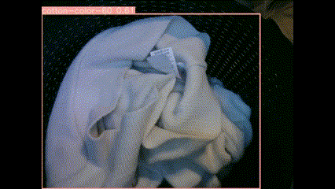

Isabelle Deslé
desle_isabelle@yahoo.com
LinkedIn
CTAI
Howest Kortrijk, Belgium
Profile and hobbies
Bachelor Student Creative Technology and AI
Fell in love with Python and Jupyter Notebooks
video classification using TensorFlow, Keras, Roboflow, CVAT, Detectron2
First
experience with Reinforcement
Learning using the ML-Agent Toolkit in Unity
Playing in Backend and Azure Cloud
with .NET, Visual
Studio Code and Copilot
Skills
- Python
- TensorFlow
- Keras
- Seaborn
- Machine Learning
- Deep Learning
- Video Classification
- Data Visualization
- GRU & LSTM
- CUDA
- Unity
- Azure Portal
- C#
- .NET
- SQL
- Cosmos Db
- Http Triggers
- GitHub
- Docker
- Elastic Search
- And all the other cool tools I got to know.
Experience
-
Data Management Team Lead – Vanheede Environment Group (2010–2023)
Experience in T-SQL, Navision, MS Dynamics AX 2012, Power BI and people management
Cleaning data, improving processes, coaching, training and problem solving.
-
Master Data Assistant – Renson (2008-2010)
Data governance and input, writing technical instructions. -
Purchase Assistant – Ferromatrix NV (2005–2008)
Data Quality & data governance, somewhere between Quality Control and Purchase.
Education
- Master of Arts in Linguistics and Literature Latin & Greek – University Gent, 1993-1998, Onderscheiding
- Freie Universität Berlin – Erasmus Exchange Program, 1995
- Master of Science in Teaching in Languages (Linguistics and Literature) – University Gent, 1998
- Marketing – Hitek, 2005-2008
- Data Analyst – Syntra, 2019
- Bachelor Creative Technology and AI – Howest, 2023 –> starting the 3rd and last year in September 2025
Projects
-
 Reinforcement Learning in Unity
Reinforcement Learning in Unity
With rewards, an ML Agent learned to load and sort the groceries of multiple sizes and volumes by destination in the car trunk. -

Raspberry Pi and Classification model
Object detection and classification using Web Cam & Infrared Motion Sensor: to assign the appropriate washing machine program to the laundry thrown in the laundry basket.
Instructables -
 360° immersion with AI generated images
360° immersion with AI generated images
An immersive experience for children unable to join in the school trip. A project for the department of Ergotherapy in Howest. Post on LinkedIn -
 Video Classification Toolkit
Video Classification Toolkit
A pipeline to analyze videos of dogs detecting Parkinson's disease with gated recurrent units, focusing on the behavior of the dog around false negative samples.